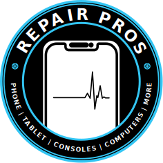

Home
Services
Need Help?
Contact
Book Repair
Home
Services
Need Help?
Contact
Book Repair
Back to Articles
Loading...
Loading...
5 min read
Loading article content...
Need Professional Help?
Our expert technicians are ready to fix your device. Book a repair today!
Book Repair